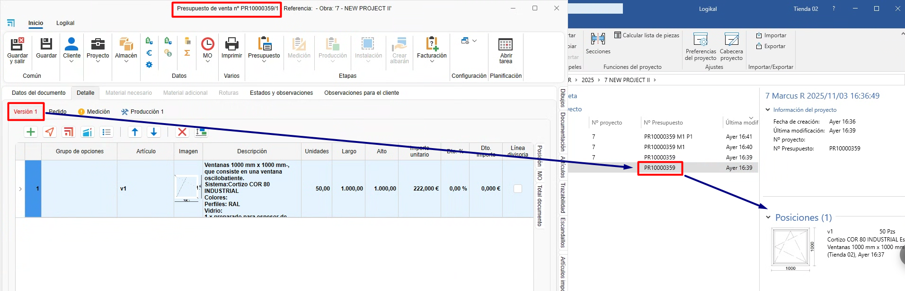
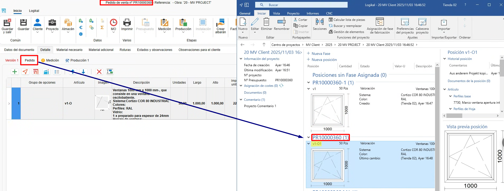

Relação entre fases e projeto no ENBLAU e Logikal
1. Introdução
Explicação da relação entre as fases de um projeto no ENBLAU e no Logikal.
2. Modos de trabalho no Logikal
No modo de trabalho, você pode definir como o ENBLAU irá atuar com o Logikal ao criar novas versões, aceitar orçamentos, gerar uma medição ou criar uma produção no ENBLAU.
- Configure isso na seção Configuração - Geral - Logikal.


2.1. Modo por fases (modo predefinido)
O modo por fases move as posições e as unidades de cada fase do documento do ENBLAU para as fases do projeto no Logikal.
- Criar um orçamento a partir do ENBLAU:
1. Versão 1
- Ao criar um orçamento no ENBLAU, esta versão será refletida no Logikal em "Posições (1)" dentro do mesmo projeto.

2. Pedido
- Ao confirmar o pedido no ENBLAU, será gerado um pedido e, de seguida, uma fase no Logikal denominada "Orçamento aceite". As posições serão movidas da fase anterior para a fase seguinte do pedido.

3. Produção 1
- A partir do pedido no ENBLAU, ao criar uma produção, será gerada uma nova fase no Logikal chamada "nº orçamento P1". As posições e as unidades indicadas serão movidas da fase anterior para a fase seguinte de produção.

4. Medição 1
- A partir do pedido no ENBLAU, ao criar uma medição, será gerada uma nova fase no Logikal denominada "nº orçamento M1". As posições e as unidades indicadas serão movidas da fase anterior para a fase seguinte de medição.

5. Produção 2
- A partir da medição no ENBLAU, ao criar uma produção (considerando as alterações da medição), será gerada uma nova fase no Logikal com o nome "nº orçamento M1 P2". As posições e as unidades indicadas serão movidas da fase anterior para a fase seguinte de produção.

⚠️ Importante! Neste modo, as posições eliminadas a partir do ENBLAU são removidas de forma permanente no Logikal.
2.2. Modo por projetos
O modo por projetos move as posições e as unidades de cada fase do documento do ENBLAU, mas no Logikal é criado um projeto (com o mesmo número do orçamento) para cada fase do ENBLAU.
- Criar um orçamento a partir do ENBLAU:
1. Versão 1
- Ao criar um orçamento no ENBLAU, esta versão será refletida como um projeto no Logikal na fase "Posições (1)".

2. Pedido
- Ao confirmar o pedido no ENBLAU, será gerado um pedido e, de seguida, um novo projeto no Logikal com o mesmo "nº orçamento".

3. Medição 1
- A partir do pedido no ENBLAU, ao criar uma medição, será gerado um novo projeto no Logikal com o mesmo número "nº orçamento M1", com as posições e as unidades indicadas da fase anterior para a fase seguinte de medição no ENBLAU.

4. Produção 1
- A partir da medição no ENBLAU, ao criar uma produção (considerando as alterações da medição), será gerado um novo projeto no Logikal com o mesmo número "nº orçamento M1 P1", com as posições e as unidades indicadas da fase anterior para a fase seguinte de produção no ENBLAU.

2.3. Modo por fases duplicando posições
O modo por fases duplicando posições copia as posições e as unidades de cada fase do documento do ENBLAU para as fases do projeto no Logikal, mantendo sempre uma cópia em cada fase.
- Criar um orçamento a partir do ENBLAU:
1. Versão 1
- Ao criar um orçamento no ENBLAU, esta versão será refletida no Logikal em "Posições (1)" dentro do mesmo projeto.

2. Pedido
- Ao confirmar o pedido no ENBLAU, será gerado um pedido e, de seguida, uma fase no Logikal denominada "Orçamento aceite". As posições serão copiadas da fase anterior para a fase seguinte do pedido.

3. Medição 1
- A partir do pedido no ENBLAU, ao criar uma medição, será gerada uma nova fase no Logikal denominada "nº orçamento M1". As posições e as unidades indicadas serão copiadas da fase anterior para a fase seguinte de medição.

4. Produção 1
- A partir da medição no ENBLAU, ao criar uma produção (considerando as alterações da medição), será gerada uma nova fase no Logikal com o nome "nº orçamento M1 P2". As posições e as unidades indicadas serão copiadas da fase anterior para a fase seguinte de produção.

⚠️ Importante! Neste modo, as posições eliminadas a partir do ENBLAU são removidas de forma permanente no Logikal.
3. Criação de projeto no Logikal
Ao criar um orçamento no ENBLAU e depois adicionar uma posição do Logikal, esta será vinculada a um projeto no Logikal ou, caso não exista, será criado um novo.


 Español
Español
 English
English
 Italiano
Italiano
 Português
Português